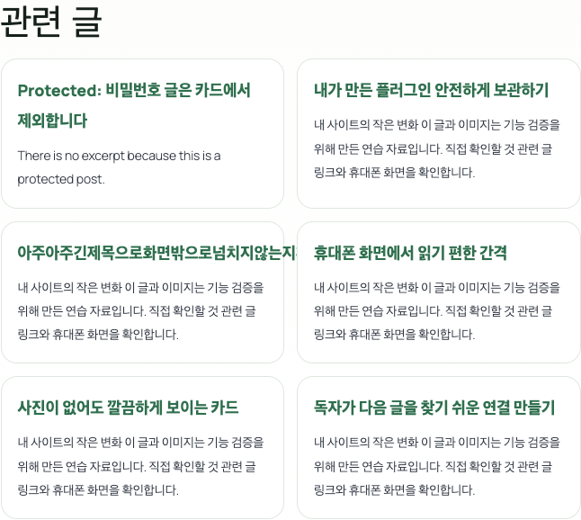
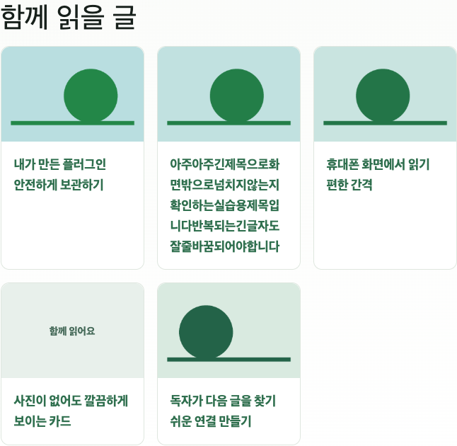

월부월백 중급반 · 3주차
코덱스로
내 플러그인 만들기
바꾸고 싶은 것을 말하면 코덱스가 작업본을 수정합니다.
화면을 확인하고 내 워드프레스에 적용해 봅니다.
먼저 챙길 것
- 코덱스를 사용할 수 있는 컴퓨터 — 작업 폴더를 열고 파일을 수정할 수 있어야 합니다
- 강의에서 받은 메킷애센 플러그인 ZIP — 원본은 그대로 보관합니다
- 새 작업 폴더 — 이번에는 1·2주차 폴더와 따로 만듭니다
- 연습용 워드프레스 — 화면과 작동을 확인할 곳입니다
- 내가 바꾸고 싶은 기능이나 모양 한 가지
안내서는 휴대폰으로 봐도 됩니다. 파일 수정 실습은 컴퓨터에서 진행하세요.
새 폴더 만들고 코덱스로 열기
컴퓨터에 내 플러그인 연습 폴더를 만듭니다. 코덱스에서 이 폴더를 작업 폴더로 고르세요.
받은 플러그인 ZIP 넣기
강의에서 받은 메킷애센 ZIP을 방금 만든 폴더 안에 복사해 넣으세요. 직접 압축을 풀거나 코드를 고치지 않아도 됩니다.
메킷애센 ZIP이 없다면
독립 연습용 플러그인으로 시작할 수 있습니다. 메킷애센을 대신하는 제품은 아닙니다.
연습용 플러그인 ZIP 받기 ↓이 예제는 설치 후 글의 단축코드 블록에 [makeit_related_lab]를 넣어 사용합니다. 같은 카테고리에 공개 글이 두 개 이상 있어야 다른 글 카드가 나옵니다.
메킷 스킬 설치 — 이 문장
아래 문장을 복사해서 코덱스 채팅창에 붙여넣으세요.
$skill-installer를 사용해서 https://github.com/makeit-edu/makeit-site-skills/tree/v0.1.0/skills/makeit-site-improve 의 스킬을 설치해줘. 같은 이름이 이미 있으면 덮어쓰지 말고 알려줘. 설치 후 실제 스킬 이름과 읽을 수 있는지 확인해줘.
확인할 것: 코덱스가 makeit-site-improve 스킬을 찾고 읽을 수 있어야 합니다.
바꾸고 싶은 것 말하기
처음에는 글 아래의 관련 글을 사진 카드로 바꿔봅니다. 아래 문장을 그대로 보내세요.
메킷 사이트 메이커를 사용해 이 폴더의 플러그인 ZIP을 살펴봐줘. 원본은 보관하고 작업본을 만들어줘. 기존 관련 글을 사진 카드로 바꾸고 컴퓨터에서는 3열, 휴대폰에서는 1열로 보여줘. 같은 기능을 중복 추가하지 말고, 사진이나 관련 글이 없는 경우도 처리해줘. 라이선스·광고·초기화 기능은 바꾸지 마.
관련 글을 사진 카드로 바꿔줘.
기존 관련 글이 나오는 곳을 확인하고,
원본과 별도의 작업본을 수정할게요.
연습 사이트에서 직접 확인
코덱스가 다 만들었다고 하면 연습용 워드프레스에서 화면과 작동을 확인합니다. 아래는 실제 로컬 시험 화면입니다.


검증용 글·이미지를 사용한 화면입니다. 사진을 누르면 크게 볼 수 있습니다.
- 카드를 누르면 맞는 글이 열리나요?
- 휴대폰에서는 한 줄에 하나씩 보이나요?
- 사진이 없는 글과 긴 제목도 괜찮나요?
- 기존 본문·메뉴와 관련 글이 중복되거나 사라지지 않았나요?
이번 변경을 연습용 WordPress와 브라우저에서 확인해줘. 관련 글 중복, 링크, 사진 없는 글, 긴 제목, 모바일 화면, 기존 검색 관련 출력을 점검해줘. 실제 확인한 것과 못 확인한 것을 나눠서 알려줘. 운영 사이트에는 아직 적용하지 마.
이번에는 내 방식으로 바꾸기
공통 실습이 되면 내가 원하는 변화 한 가지를 더 말해보세요. 강사의 문장을 그대로 따라 하는 데서 끝나지 않습니다.
이 입력란은 문장만 만듭니다. 복사해서 코덱스에 보내야 수정됩니다.
내 설치 ZIP과 복구 방법 받기
마음에 들고 검사도 끝났다면 워드프레스에 설치할 ZIP을 만들어 달라고 하세요.
확인한 작업본을 WordPress 설치용 ZIP으로 만들어줘. 원본은 덮어쓰지 마. 개인 키·비밀번호·수강생 설정 파일·DB·로그·백업은 넣지 말고, 기존 라이선스 기능은 유지해줘. 바꾼 내용, 검사 결과, 못 확인한 점, 원본으로 되돌리는 방법도 함께 정리해줘. 공개 배포는 하지 마.
백업하고 내 워드프레스에 적용
연습 사이트에서 확인한 뒤 진행합니다. 운영 사이트의 파일·DB를 백업하고, 문제가 생겼을 때 복구할 방법을 먼저 확보하세요.
- 관리자 → 플러그인
- 새로 추가 → 플러그인 업로드
- 내가 만든 플러그인 ZIP 선택
- 기존판 교체 여부 확인 → 설치·활성화
- 실제 글과 모바일에서 다시 확인